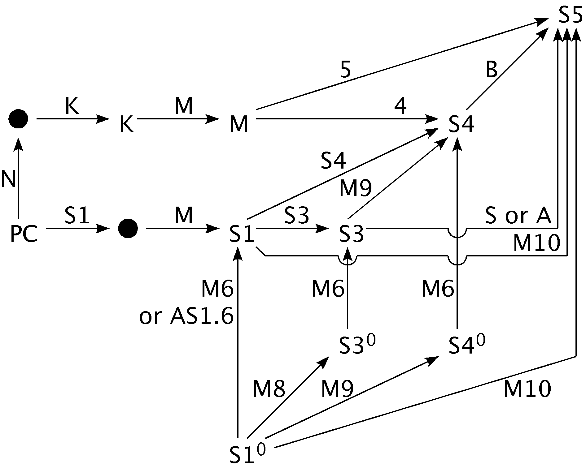

PC Based Systems

Encoding Propsitional Logic
- Using Hilbert's axioms
- Also tried Principia, Rosser, Lukasiewicz
- Axioms
for propositional connectives (as functors)
- HELP! Do I really need ! [X] : not(not(X)) = X
- HELP! Having them all. Does it hurt?
- Rules
for modus ponens and modus tollens
- HELP! This seems to be an axiom to me.
- HELP! Modus tollens dependent on idempotence of not, but
not vice versa. Which to use?
- Definitions for operators
- HELP! Having them all. Does it hurt?
Encoding Modal Logics